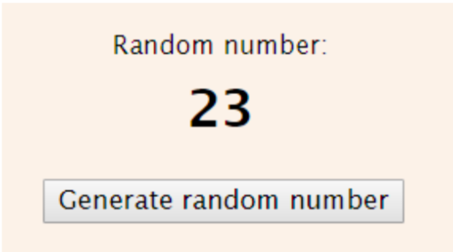
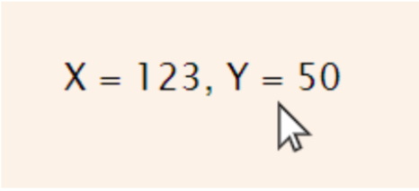
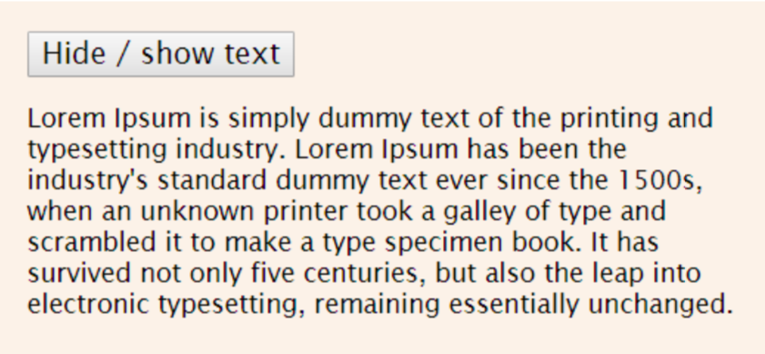
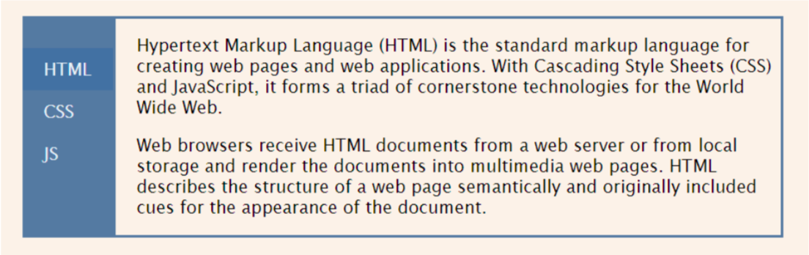
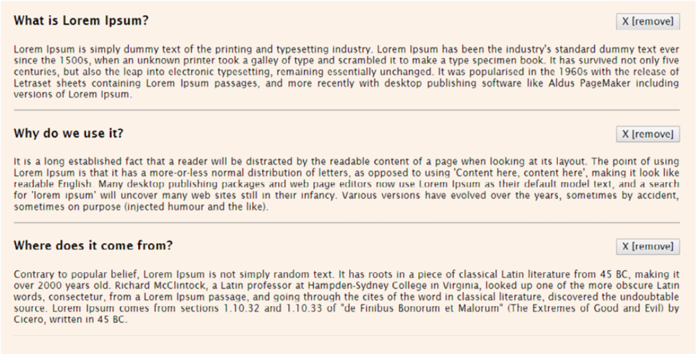
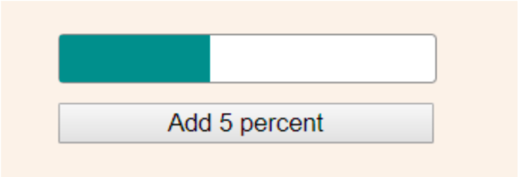

Завдання № 1 - Создать html-страницу для генерации случайных чисел. На странице должна быть кнопка, при нажатии на которую случайное целое число от 0 до 100 выводится в div.

Завдання № 2 - Создать html-страницу с div, который занимает всю ширину
и высоту экрана. При движении мышкой внутри этого div, выводить текущие координаты мышки. При клике кнопкой мыши туда
же, выводить, какой именно кнопкой был совершен клик (правой
или левой).

Завдання № 3 - Создать html-страницу, на которой будет кнопка и текст. При нажатии на кнопку, текст должен скрываться. При повторном нажатии – текст должен снова отображаться.

Завдання № 4 - Создать html-страницу со вкладками. С левой стороны страницы отображается несколько вкладок, по которым можно переключаться. У каждой вкладки есть свое содержимое, но в один момент времени отображается содержимое только активной вкладки.

Завдання № 5 - Создать html-страницу со списком новостей. Возле каждой новости должна быть кнопка Удалить, при нажатии на которую
соответствующая новость исчезает.

Завдання № 6 - Создать html-страницу с progressbar и кнопкой, при нажатии на которую заполненность progressbar увеличивается на 5%.
